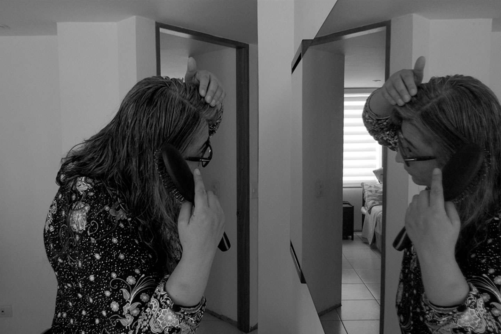

IF
La vanidad es otra de las cosas que en tiempos de pandemia, hemos aprendido a percibir de diferentes formas, todos hemos experimentado cambios en nuestra apariencia física, y al no tener acceso a los salones de belleza, muchas de nuestras madres han sido obligadas a lucir su cabello con el característico color blanco platinado de las canas que vienen con la edad. Ese es el caso de Yolanda, mi mamá, quien a sus 48 años de edad estaba acostumbrada a constantemente teñirse el cabello de un rojo vinotinto antes de que detonara la pandemia, tuvo que hacer paz con el platinado de sus canas que ya se empezaba a notar desde el pasado marzo, cuando se anunció el inicio de la cuarentena.
Estas fotografías son la historia de la cotidianidad de sus raíces, como amanecen en la mañana y como lucen en la tarde, como se transforman en esculturas y cómo vuelven a la normalidad, de como mi mamá hace las pases todos los días con sus raíces en el espejo, para en la noche volver a preguntarse cuándo marcará la próxima asistencia al salón de belleza en el calendario, y de cómo a pesar de todo, sus raíces la abrazan en la cotidianidad de la nueva normalidad que tantas pérdidas ha traído con ella, pérdidas que hemos aprendido a aceptar.
Esta también es la historia de las raí- ces que ella cuida, esas a las que le fascina nutrir y embellecer todos los días, las que ella dice que necesitan amor y cuidado como si se tratara de un hijo, porque las riega en la mañana, a medio día y en la noche; las adorna y las cambia de matera, las saluda cuando sale el sol, y cuando se oculta se despide. Mi mamá quiere mucho a las raíces que crecen en materas y que florecen con el sol, y aunque no quiera mucho a las raíces que crecen en su cabeza, ha aprendido a aceptarlas y también a apreciarlas con un poco de nostalgia.

Esta historia narrada a través de la imagen fotográfica se trata de cómo nuestras raíces nos acompañan día a día, de como a veces discutimos con ellas, pero siempre terminamos recordándolas con nostalgia. Este ensayo también es de mis raíces, porque incluso yo tengo raíces, por eso decidí retratar a mi mamá amando y dudando de sus raíces porque ella también es la raíz que no quiero perder y que quiero seguir viendo todos los días haciendo las pases con el nuevo blanco plata de su ca- bello, es la raíz que cuido todos los días y es la raíz que me cuida a mi también, por eso este es el ensayo fotográfico a mis queridas raíces.